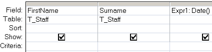

Return the current date.
Syntax
Date
The Date() function can be used in VBA or in an SQL query.
Examples
In a query:

In VBA:
dim dtmCreated as Date dtmCreated = Date
“Beauty is Nature's coin, must not be hoarded, but must be current, and the good thereof consists in mutual and partaken bliss” ~ John Milton
Related:
DateAdd - Add a time interval to a date.
DateDiff - Return the time difference between two dates.
DatePart - Return part of a given date.
DateSerial - Return a date given a year, month, and day.
Now - Return the current date and time.
Time - Return the current system time.